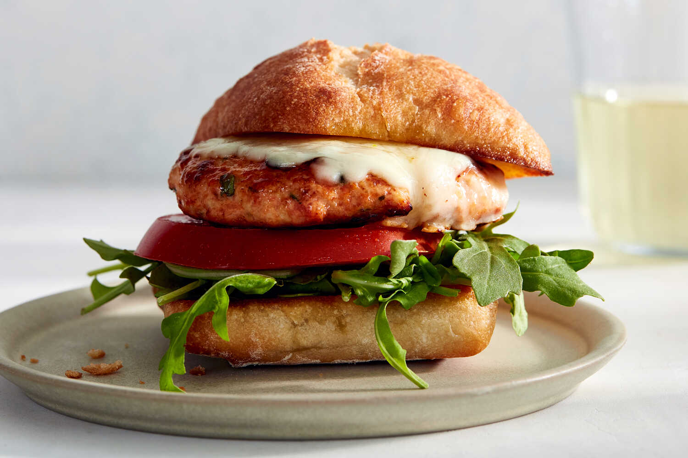

Chicken Parm Burgers

Description
This chicken Parm burger recipe makes an absolutely outstanding burger on every level, like a handheld version of everyone's favorite chicken Parmesan.
The burger is made from chicken thighs freshly ground with mozzarella and marinara, breaded and fried, and then layered on toasted garlic buns with more marinara for a true chicken Parm experience.
Ingredients
- 12 ounces boneless skinless chicken thighs or breasts, cut into 1-inch pieces
- 4 ounces mozzarella cheese, shredded
- 1 1/4 teaspoons kosher salt
- 1/2 teaspoon freshly ground black pepper
- 1/2 teaspoon granulated garlic
- 1/4 teaspoon dried oregano
- 2 tablespoons panko breadcrumbs
- 1 tablespoon olive oil
- 1/4 cup marinara or other prepared tomato sauce
Steps:
- Combine chicken, 4 ounces mozzarella cheese, 1 1/4 teaspoons salt, black pepper, granulated garlic, oregano, 2 tablespoons panko breadcrumbs, olive oil, and 1/4 cup marinara sauce in a food processor. Pulse on and off until mixture is finely ground, forms a ball, and starts spinning around in the food processor. For best results, scrape down the sides of the bowl during the process.
- Stop the food processor and transfer chicken mixture into a bowl; cover and chill for about 30 minutes. You can proceed without chilling, but shaping patties is much easier if the mixture is cold. Using wet hands, shape mixture into 4 equal-sized patties. Wrap each patty in plastic wrap and refrigerate until chilled or until you are ready to cook.
- Preheat the oven to 400 degrees F (200 degrees C). Line a sheet pan with foil.
- Stir soft butter, crushed garlic, parsley, and pinch of salt together in a small bowl. Place burger buns on the prepared sheet pan, and spread with garlic butter. Dust tops with about 1 teaspoon grated Parmigiano-Reggiano cheese, if desired.
- Toast in the preheated oven until lightly browned, 7 to 10 minutes.
- Press patties out to the same size as the bun. Apply panko breadcrumbs to each patty, pressing into both sides of the patty, about 1 tablespoon each.
- Heat olive oil in a nonstick skillet over medium heat. When hot, transfer in the patties, and cook until a golden brown crust forms, 3 to 4 minutes. Flip over and cook 1 minute, then spoon a little hot marinara sauce onto each. Sprinkle about 2 tablespoons mozzarella cheese over each burger, cover the pan, and cook until the temperature of chicken measured with an instant-read thermometer reaches 150 degrees F (66 degrees C), 2 to 3 minutes more. Rest for 3 minutes, covered, before assembling burgers.
- Spoon some hot marinara sauce on the bottom of each bun, and top with chicken Parm burgers, a sprinkle of fresh parsley, and the other half of bun. Serve immediately.